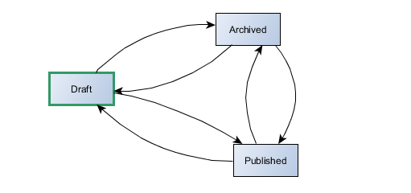

About Workflows ¶
According to wikipedia :
A workflow consists of a sequence of connected steps. It is a depiction of a sequence of operations, declared as work of a person, a group of persons, an organization of staff, or one or more simple or complex mechanisms. Workflow may be seen as any abstraction of real work, segregated in workshare, work split or other types of ordering. For control purposes, workflow may be a view on real work under a chosen aspect, thus serving as a virtual representation of actual work. (read more on Wikipedia)
Workflows (also called Petri net) is a vast subject and the aim of this document is not to go deeply in the theorical fields. As described in the next chapter, the SimpleWorkflow behavior only implements a simple subset of it. if you are interested in better understanding theorical basis on the subject, you'll find some references at the end of this page.
Use case : a blog ¶
To demonstrate how the workflow concept can be used in a valuable way, let's consider a real life example : a Blog. In a typical blog, you would find a model for Post with a status attribute that accept 3 values defined as class constants (this is how status were implemented on the "old" yii 1.x demo blog).
models/Post.php
class Post extends \yii\db\ActiveRecord
{
const STATUS_DRAFT=1;
const STATUS_PUBLISHED=2;
const STATUS_ARCHIVED=3;It is quite obvious that theses values define possible states of a Post instance. Moreover, a set of rules are used to define how posts will evolve among these 3 statuses : when you first create a post, it is defined as being draft, then it can be published or archived. A published post can become draft (it is then unpublished) or be archived. At last an archived post can be published or become draft.
What we have just described here are possible transitions between different statuses of the Post, and if we try to give a graphical representation to this description, we'll end up with our first (and very simple) workflow.

Our workflow definition is:
- 3 statuses : draft, published, archived
- 6 possible transitions
- initial status : draft
To handle this very simple workflow, there is not much to do as the user has complete freedom to set a post status : any status can be reached from any other status and in this case, there is no need for a dedicated extension that would handle workflow logic...because there is no workflow logic !
Use case²: a multi-user publishing system ¶
Let's imagine something a little bit more complex.
Our basic blog is now becoming a multi-user publishing system, where each user is assigned tasks : some are redactors (reporter), some make corrections and layout work (they know CSS), and there is of course a chief editors who is responsible for publication.
If we want to be able to handle posts in our new publishing system, we must think of a more elaborated workflow that will fit this new organization. First of all, let's list possible post statuses :
- draft : a post is always created as draft. This is the initial status of all posts
- correction : the post is being corrected and layout improvements may also be added
- ready : the post is ready to be published but not yet online
- published : the post is online, available to readers
- archived : the post is not directly available to readers, but can be accessed through the archive section of the site
That is not enough, we must also define possible transitions between these statuses. These transitions strongly depend on how the work is going to be organized, how users of our publishing system will interact with each other. For this example we will abritrarly state the following rules :
- A Post must always be corrected before publication
- the chief editor is responsible for publishing/unpublishing posts
- the chief editor is responsible for sending a post to archive
That will be enough for this example but of course we could (and probably should) add more business rules. Now, based on what we have just define, here is a possible workflow four our posts :

The first version of the "Post worfklow" was very simple, and as each status could reach any other status, there was no need for the developer to make any tests when a Post changed status. With this new version, that's another story ! Some logic must be implemented in order to prevent Archived post to become Draft, or Published posts to be sent to Correction by a redactor.
That is when SimpleWorkflow can be useful!
Workflow Definition ¶
So we have a nice workflow, let's see how the SimpleWorkflowBehavior can help in managing our Post models life-cycle inside this workflow. First we must create a definition for our workflow.
The default workflow definition format supported by yii2-workflow is a PHP array. Basically, you provide a class that contains the method getDefinition(), and
this method returns the workflow definition as a PHP array.
The class is named PostWorkflow which is by convention the name of a workflow associated with the Post model. It is located in
@app/models, the default location where workflow definitions are stored. Note that these conventions and default settings
can of course be overloaded with values provided by the developer at initialisation (this will be discussed later).
Let's see how our workflow definition looks like :
@app/models/PostWorkflow.php
namespace app\models;
class PostWorkflow implements \raoul2000\workflow\source\file\IWorkflowDefinitionProvider
{
public function getDefinition() {
return [
'initialStatusId' => 'draft',
'status' => [
'draft' => [
'transition' => ['correction']
],
'correction' => [
'transition' => ['draft','ready']
],
'ready' => [
'transition' => ['draft', 'correction', 'published']
],
'published' => [
'transition' => ['ready', 'archived']
],
'archived' => [
'transition' => ['ready']
]
]
];
}
}It's quite straightforward to understand isn't it ?
Note that a more condensed array format is also supported, but for this example we will use this one as it allows more customization.
Attaching the behavior ¶
To be able to manage our Post model inside the workflow, we must take care about following points :
- check that the Post inherits from
yii\base\Model: the SimpleWorkflowBehavior can only be attached to Model objects and in fact most of the time it will be attached to\yii\db\ActiveRecordObjects. - ensure that the Post class include an attribute (or a property) that will be used to store the current status of a post.
We will use attribute
statuswith type VARCHAR(40) for our example, but it can be any attribute.
Attaching the behavior to our model is a standard Yii2 operation. For more information on Yii2 Behaviors please refer the The Definitive Guide to Yii2.0.
Post.php in @app/models
namespace app\models;
/**
* @property integer $id
* @property string $title
* @property string $body
* @property string $status column used to store the status of the post
*/
class Post extends \yii\db\ActiveRecord
{
public function behaviors()
{
return [
\raoul2000\workflow\base\SimpleWorkflowBehavior::className()
];
}
// ...We now have a Post model with workflow capabilities. Let's see how we can use it.
Basic Status Usage ¶
Assignement and Initial Status ¶
The first operation you'll probably need to perform is assigning a status to your model. The natural way to do this is by simply
assigning a value to the status attribute.
$post = new Post();
$post->status = 'published';When you assign a value to the status attribute, no verification is done against the workflow and the SimpleWorkflowBehavior is
not event invoked in any way. The status validation occurs when the status attribute is saved : at this time only, the
post object is considered as really sent to a specific status.
The status validation consists in verifying that the model can perform the transition between its actual status and the value assigned
to the status attribute.
Let's consider the following code :
$post = new Post();
$post->status = 'published';
$post->save();When we run this code, we get an Exception !
Workflow Exception – raoul2000\workflow\base\WorkflowException
Not an initial status : PostWorkflow/published ("PostWorkflow/draft" expected)
Could it be more clear ? Ok, maybe it could but let's see in detail what just happened.
The SimpleWorkflowBehavior enters in action when the Post is saved. At this point it tests if the transitions is possible
between the current status (managed internally by the behavior) and the final one (assigned to the status attribute).
In our case, there was no current status (the object has just been created) and the final
status has been set to published, so, from the SimpleWorkflowBehavior point of view, we are dealing with the following transition :
null -> 'published'
This transition is particular as it happens only when a model enters into a workflow. If you remember well, the PostWorkflow definition
above contained a key called initialStatusId. This key is used to define the status Id that must be used by any model when entering a workflow. This is a built-in
constraint : the first status assigned to a model must be the one defined in the initialStatusId key.
Obviously we didn't comply with this rule as we tried to enter into the workflow through the published status and that's why we received an exception advising us to use PostWorkflow/draft instead.
Let's follow this wise advice :
$post = new Post();
$post->status = 'draft';
$post->save();
echo 'the status is : ' . $post->status;Now our post is saved correctly and the output is.
the status is : PostWorkflow/draft
Hey wait ! what's that ? we set the status attribute to draft, saved the post and now the value of our status attribute is PostWorkflow/draft. All
right, don't panic, this is just the way the SimpleWorkflowBehavior has normalized the status id, from its short form (draft)
to its absolute form (PostWorkflow/draft). We will describe this later in a chapter dedicated to the WorkflowSource component.
For the moment just remember that these 2 forms of writing a status are equivalent.
sendToStatus ¶
Another way of assigning a status to our Post model is by using the method sendToStatus() defined in the SimpleWorkflowBehavrior behavior.
When you use sendToStatus() it is not required to save the model for the SimpleWorkflowBehavrior to enter in action. A call to
sendToStatus() will perform following tasks :
- retrieve the current status (stored internally by the SimpleWorkflowBehavior)
- find a transition between the current status and the one passed as argument
- if such a transition exists, ensure that it can be used and that it is valid
- on success, apply the transition and update the
statusattribute owned by the Post model.
Note that sendToStatus() actually performs the transition : the model leaves it current status and goes to the new one. It is equivalent
to status attribute assignment and model being saved.
In the example below, the output is the same as before, without having to invoke save().
$post = new Post();
$post->sendToStatus('draft');
echo 'the status is : ' . $post->status;And of course if we try to break the initial status rule again, we will also get the same exception as before.
$post = new Post();
$post->sendToStatus('published'); // exception is thrown here !It is important to remember that by definition, a call to sendToStatus() does not handle persistence of the model, and it is your responsability
to ensure that the model is saved correctly, when needed.
Summary ¶
The SimpleWorkflowBehavior maintains internally the real value of the current model status. To actually change the status of a model you have two options :
- assign a value to the
statusattribute and save (or update) it : the value assigned to thestatusattribute is considered as the end status of the pending transition that will be committed when thestatusattribute is saved - call
sendToStatus('endStatus')with the end status as argument : the transition between the real status and the one passed as argument is committed immediately.
Getting the Status ¶
If status assignment can be done by assigning a value to the status attribute, getting the status value of a model should not involve
accessing this attribute directly but use the method getWorkflowStatus() instead. However in certain circumstances, reading the status
attribute value is acceptable, but then it is your responsibility to ensure that both values are synchronized.
getWorkflowStatus() vs attribute ¶
When you call getWorkflowStatus() on a model attached to the SimpleWorkflowBehavior, you will get the instance of the
status your model is currently in. The type of the object returned in this case is \raoul2000\workflow\base\Status. If your model is
not in a workflow, getWorkflowStatus() returns NULL.
// first save a post in status 'draft'
$post = new Post();
$post->sendToStatus('draft');
$post->save();
// now read this post and output its status label
$post2 = Post::findOne($post->id);
echo '(1) the status is : ' . $post2->getWorkflowStatus()->getId();
echo '(2) the status is : ' . $post2->status;The output is :
(1) the status is : PostWorkflow/draft
(2) the status is : PostWorkflow/draft
Seeing at this result, it is not obvious why we should use the getWorkflowStatus() method instead of direct attribute access to get
the status of a model. Ok but remember that the status attribute may not contain the actual value of the model's status, until this model is
saved (or updated).
Let's see that on an example. In the code below, 2 functions are modifying and returning a newly created Post object. The problem
is they are both accessing the status attribute assuming it contains the actual status value of the post.
function foo($post) {
// do some fancy stuff here ...
if( $post->status == null) {
$post->status = 'draft';
}
return $post;
}
function bar($post) {
// do even more some fancy stuff here ...
if( $post->status == 'draft'){
$post->status = 'correction';
}
return $post;
}
$post = foo(new Post());
$post = bar($post);
$post->save(); // keep the faithCan you guess what happens when the model is saved ? Well, that's when the SimpleWorkflowBehavior enter into action, but that's too late...
The value of the status attribute is correction and the real status value stored internally by the behavior is NULL. From the
SimpleWorkflowBehavior point of view, this post object is trying to enter into a workflow through the correction status
and we already know this is not permitted : bang ! Same exception again !
Workflow Exception – raoul2000\workflow\base\WorkflowException
Not an initial status : PostWorkflow/published ("PostWorkflow/draft" expected)
This small example tries to illustrate the danger of using the status attribute to know the actual status of the object. Very much care should be taken when doing this and remember that the value of the status attribute does not always reflect the actual Status of a model.
Below is a safe version of the previous example. All access are done through the SimpleWorkflowBehavior behavior.
function foo($post) {
// test if $post is currently in a workflow
if( ! $post->hasWorkflowStatus() ) {
$post->sendToStatus('draft');
}
return $post;
}
function bar($post) {
// note that we use the absolute form of the status Id
if( $post->getWorkflowStatus()->getId() == 'PostWorkflow/draft'){
$post->sendToStatus('correction');
}
return $post;
}
$post = foo(new Post());
$post = bar($post);
$post->save();That being said, if you know what you are doing you can of course use the status attribute directly to perform some operations. In this
case remember that when the status value is set by the SimpleWorkflowBehavior the absolute form of status id is used (e.g workflowId/statusId).
Workflow Tasks ¶
Being able to garantee that the model status will only use authorized transition is nice, but the SimpleWorkflowBehavior
provides a way to add some logic to worfklows.
Let's imagine that we want to improve our Publishing System with this new business rule :
>We have noticed that people in charge of correction are not so reactive, which increases the publication delay. They say it's because they never know when a new post is ready to be corrected and so, we decide to improve our Blog by sending an email to all correctors, as soon as a new post is requesting correction.
This can be achieved very easely by adding a task to our workflow, on the transition that goes from the draft status to the correction status. In the (incomplete) workflow representation below, this task is symbolized by a little green square attached to the transition.

Let's see how to implement this sendMail() task and include it in our workflow :
@app/models/Post.php
use raoul2000\workflow\events\WorkflowEvent;
class Post extends \yii\db\ActiveRecord
{
public function init()
{
$this->on(
WorkflowEvent::afterChangeStatus('PostWorkflow/draft', 'PostWorkflow/correction'),
[$this, 'sendMail']
);
}
public function sendMail($event)
{
MailingService::sendMailToCorrector(
'A Post is ready for correction',
'The post [' . $event->sender->owner->title . '] is ready to be corrected.'
);
}If you know a little bit about Events in Yii2, you may have recognized what happens on the init() method of our Post model : we
have attached an event handler to the event returned by the call to WorkflowEvent::afterChangeStatus('PostWorkflow/draft', 'PostWorkflow/correction')
which is nothing more than a helper method that creates the actual event name for us.
If you're not familiar with the concept of Event in Yii2, you have a look to the Yii2 definitive Guide.
The Event Model ¶
The SimpleWorkflowBehavior is built around Yii2 events. Most of the time when something intresting happens in a workflow, an event is fired, and that's your job to decide what to do : catch it and use it or let it go, let it free, let it be.
There are workflow events for almost everything :
- when a model enters in a workflow
- when a model leaves a workflow
- when a model enters in a status
- when a model leaves a status
For even more control, each event from the above list is splitted its before and after variation. When working with events, it is important to understand when each one is fired so to choose the appropriate one to perform a task. In the previous example we have declared an event handler in charge of sending a mail to the corrector people, when the post changes from status draft to correction. That's already something, but it doesn't completely satisfies our requirement which was :
[...] sending an email to all correctors, as soon as a new post is requesting correction.
If we take a look to our workflow, we can see that there are 2 ways to reach the status correction : one coming from draft the other coming from ready... and this last one is not taken into account by the current event handler installed the the Post model.
We could of course handle both transitions, but what if tomorrow, a new transition to correction is added ? To be sure to still notify correctors, the proper solution would be to handle the enter to status event.
The event handler registration now becomes :
$this->on(
WorkflowEvent::afterEnterStatus('PostWorkflow/correction'),
[$this, 'sendMail']
);The AfterEnterStatus event is fired each time a models enters into a status, no matter what is its start status. The sendMail() method will be invoked each time a post model enters into the status correction, no matters where it comes from.
Ok, next requirement ! .. yes, we have some business rules to implement in our super great multi-user publishing system ! (I hope you didn't forgot it). One of our rule was :
the chief editor is responsible for publishing/unpublishing posts
In our workflow, the only way for a post to reach the published status is coming from status ready. The rule above can be turned into something more "workflow oriented" like "a post can be sent to status 'published' only by a chief editor". Using the appropriate workflow event and Yii2 RBAC feature we can easely implement this rule in the Post model.
use raoul2000\workflow\events\WorkflowEvent;
class Post extends \yii\db\ActiveRecord
{
public function init()
{
$this->on(
WorkflowEvent::beforeEnterStatus('PostWorkflow/published'),
function ($event) {
$event->isValid = \Yii::$app->user->can('chief.editor');
}
);
}
// .....Assuming we have created the chief.editor permission, this event handler only checks if it has been assigned to the current user. If that's
not the case, the $event object is set as invalid and when this happens in a before event, it interrupts immediately the process of transition
validation : the model will not be able to reach the end status ( here published).
Yes, you understood well (I hope) : invalidating a before event will block the transition. Events like beforeEnterStatus, beforeEnterWorkflow, beforeLeaveStatus etc .. are concerned but if you do the same thing on afterChangeStatus for example, nothing will happen, that's too late .. sorry.
There's more than that and events in SimpleWorkflow is a vas subject that is covered in detailed in another chapter.
Workflow Driven Model Validation ¶
When dealing with complex workflows where model validation rules are strongly related to statuses and user interaction is required, attributes validation can quickly become a nightmare to handle
Again, let's see that on an example.
In our publishing System, a Post has various attributes : category, tags, priority, etc... These attributes are not set at the Post creation but at different moment of its life-cycle in the workflow. For instance, we decide that the author must give a category to the Post, the correction team is in charge of adding tags, and at last the chief editor is responsible for setting a priority to the Post.
In terms of validation rules for the Post model, this new requirement can be defined by 3 statements :
- When the Post is sent from draft to correction status, it must have a category
- When the Post enter into status ready, it must have tags
- When the Post is sent from ready to published status, is must have a priority
Theses validation could of course be implemented using the event model we saw in the previous chapter : in the appropriate event handler we would test the appropriate attribut. Ok but why reinventing the wheel when Yii2 provides a great Model Validation feature ? Why not use it ?
SimpleWorkflow doesn't only provide a behavior, it also came with a custom validator that will help us in verifying that on a specific transition our model attributes are correct. In the example below, we will check the first rule : in the draft to correction transition, the attribute category is required.
use raoul2000\workflow\validation\WorkflowValidator;
class Post extends \yii\db\ActiveRecord
{
public function rules()
{
return [
[['status'], WorkflowValidator::className()],
['name','required',
'on' => 'from {Post3Workflow/draft} to {Post3Workflow/correction}'],
];
}In order to enable workflow driven attribute validation, it is required to use the raoul2000\workflow\validation\WorkflowValidator validator.
When you validate the status attribute, the WorkflowValidator creates a scenario name based on the transition that is about to occur. Remember
that the pending transition is the one that goes from the actual status of the model (maintained internally by the SimpleWorkflowBehavior) and
the future status (assigned to the status attribute). Once the scenario name is created, the WorkflowValidator applies all validation rules
that matches the scenario.
In the following example, our post instance is first sent to status draft using the sendToStatus() method, and then to 'correction' using save()
which by default initiates the model validation.
$post = new Post();
$post->sendToStatus('draft'); // = success : the current status is 'draft'
$post->status = 'correction';
if( ! $post->save() ) { // pending transition is draft -> correction
echo $post->getFirstError('name');
}The output :
Name cannot be blank.
Based on scenario names which are meaningfull in a workflow context, we can define validation rules for any attribute model, just like you would do with any other scenario.
Workflow Scenario ¶
In the previous example we have used the required built-in validator on the name attribute, only for the scenario
from {Post3Workflow/draft} to {Post3Workflow/correction}. This scenario name is created automatically at validation time by the WorkflowValidator
depending on the pending transition. In order to provide maximum flexibility there are several scenario like this one which that are created
the same way by the WorkflowValidator.
- from {start} to {end}
- leave status {status}
- enter status {status}
- enter status {status}
- enter workflow {workflow id}
- leave workflow {workflow id}
As you can see SimpleWorkflow allows to validate model attributes at different moment of the model life-cycle within a workflow. You could
for instance validate that the attribute tags is not empty when the post model enter status {Post3Workflow/ready}, or
as soon as the post enter workflow {Post3Workflow}.
The helper class WorkflowScenario is here to assist you with scenario names, and if you favorite IDE includes a nice auto-completion feature writting scenario name may become a real pleasure (more or less).
Let's rewrite our validation rules using the WorkflowScenario helper:
use raoul2000\workflow\validation\WorkflowValidator;
class Post extends \yii\db\ActiveRecord
{
public function rules()
{
return [
[['status'], WorkflowValidator::className()],
['title','required',
'on' => WorkflowScenario::changeStatus('Post3Workflow/correction', 'Post3Workflow/ready') ],
['tags','required',
'on' => WorkflowScenario::enterStatus('Post3Workflow/ready') ],
];
}References ¶
The SimpleWorkflow behavior, is not dedicated to provide a complete workflow driven model that would replace MVC or any other pattern. It should only be considered as a set of tools that facilitate workflow managment for simple applications.
If you want to know more about the subject, and discover what a complete workflow engine looks like, here is a list of intresting links.